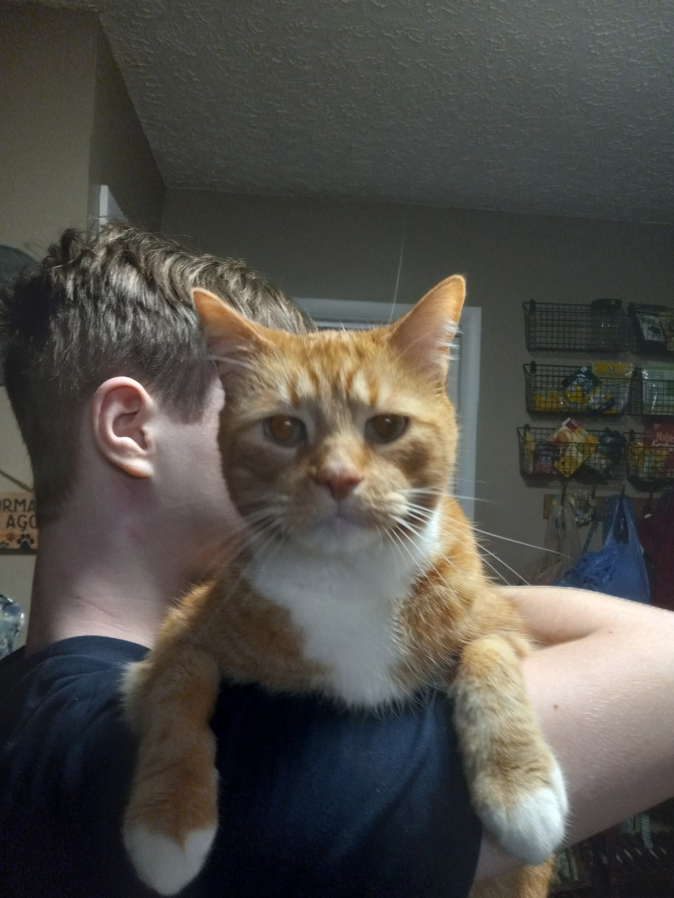

Bacon Q. Dog is a 9yr old labradoodle. He prefers to spend his days lounging among the three different beds/couches that his family has gifted him. He enjoys a walk or two around the neighborhood, as long as he can pretend that he doesn't see any of the other animals to avoid the embarrassment of not wanting to admit he has no wolf-like skills in chasing them.
At night just as the rest of the family is ready to relax, Bacon suddenly wants to release all of his energy. He will place his toys on a mini couch and frantically drag the couch around, giving his toys "a ride." There is also a lot of rolling. Lots and lots of rolling.
Photo Gallery


Likes
- Belly rubs
- Playing tug-of-war
- Sneaking onto the couch

Cheero The Cat
Cheero is a 5 year old house cat. He thrives on chaos and will do anything for food. Keep an eye on your plate when he's around...he may snatch a bite. Besides stealing food, Cheero also loves to run around at odd hours of the night. He does not abid by the human sleeping schedule. Hope you are a deep sleeper when he's got the zoomies.
Cheero also has a cat friend. His mom was also adopted with him, they have a love-hate relationship. You may find them cuddling on the couch one minute, the next they may challenge each other on who can hiss the loudest.
Photo Gallery
Likes
- Chaos
- Fish treats
- Parkour
Bellum The Dog
Bellum is the younger adopted brother of Pax. He lives up to his name (Bellum means war in Latin). Although he is a cuddlebug, sometimes he will headbutt you if you are not paying enough attention to him. Combat with lots of cuddles and affection.
When it's time to go outside, Bellum is the first to run. He loves the huge fenced yard and is always chasing the unlucky squirrels who decide to hang out there. Beware if you wear a hat, he will think you are a different person and start barking at you.
Photo Gallery
Likes
- Head butting
- Cuddles
- Zoomies

Millas The Conure
Millas is a Turquoise Green Cheek Conure. He is almost 3 years old now, he will hopefully live to be 35! He can say a lot of words, like "pretty bird," "how are you doing," and "good morning." Millas can also do a variety of tricks (with a provided treat of course). He can fly to you on command, spin in a circle, and wave.
Millas also enjoys "singing." He will chirp and scream bird noises to sing along to music. He will probably not win a Grammy for his singing...but we love him anyway. Watch your fingers when he is in a mood, he will give love bites. This is avoided with bribery in the form of sunflower seeds.
Photo Gallery

Likes
- Anarchy
- Sunflower seeds
- "Singing"
Princess Mira The Cat
This is Mira's world, and we're just living in it. Mira is the princess of the house, waiting on her subjects to sit on the couch so she may lay on their laps and receive all the pets. She's also the friendliest cat you'll ever meet, Mira is happy to meow and greet anyone who enters the home.
Mira is also a big fan of being tall, you may find her on the top of many a furniture. She also, for some reason, enjoys sitting in bathtubs. Mayhaps she is planning world domination in there, we may never know.
Photo Gallery
Likes
- Napping
- Many, many pets
- Bathtubs